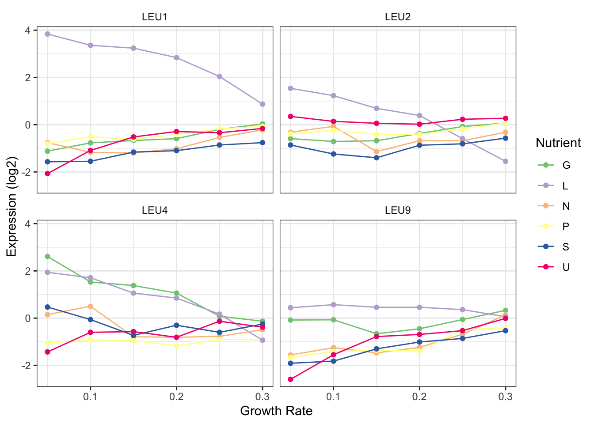

Load the tidyverse package using the library() function:
library(tidyverse)## ── Attaching packages ────────────── tidyverse 1.2.1 ──## ✔ ggplot2 3.2.1 ✔ purrr 0.3.2
## ✔ tibble 2.1.3 ✔ dplyr 0.8.3
## ✔ tidyr 0.8.3 ✔ stringr 1.4.0
## ✔ readr 1.3.1 ✔ forcats 0.4.0## ── Conflicts ───────────────── tidyverse_conflicts() ──
## ✖ dplyr::filter() masks stats::filter()
## ✖ dplyr::lag() masks stats::lag()raw <- read_csv("data/Brauer2008_DataSet1.csv")## Parsed with column specification:
## cols(
## .default = col_double(),
## GID = col_character(),
## YORF = col_character(),
## NAME = col_character()
## )## See spec(...) for full column specifications.glimpse(raw)## Observations: 5,537
## Variables: 40
## $ GID <chr> "GENE1331X", "GENE4924X", "GENE4690X", "GENE1177X", "GEN…
## $ YORF <chr> "A_06_P5820", "A_06_P5866", "A_06_P1834", "A_06_P4928", …
## $ NAME <chr> "SFB2 || ER to Golgi transport || molecular functi…
## $ GWEIGHT <dbl> 1, 1, 1, 1, 1, 1, 1, 1, 1, 1, 1, 1, 1, 1, 1, 1, 1, 1, 1,…
## $ G0.05 <dbl> -0.24, 0.28, -0.02, -0.33, 0.05, -0.69, -0.55, -0.75, -0…
## $ G0.1 <dbl> -0.13, 0.13, -0.27, -0.41, 0.02, -0.03, -0.30, -0.12, -0…
## $ G0.15 <dbl> -0.21, -0.40, -0.27, -0.24, 0.40, 0.23, -0.12, -0.07, 0.…
## $ G0.2 <dbl> -0.15, -0.48, -0.02, -0.03, 0.34, 0.20, -0.03, 0.02, 0.0…
## $ G0.25 <dbl> -0.05, -0.11, 0.24, -0.03, -0.13, 0.00, -0.16, -0.32, 0.…
## $ G0.3 <dbl> -0.05, 0.17, 0.25, 0.00, -0.14, -0.27, -0.11, -0.41, -0.…
## $ N0.05 <dbl> 0.20, 0.31, 0.23, 0.20, -0.35, 0.17, 0.04, 0.11, 0.30, 0…
## $ N0.1 <dbl> 0.24, 0.00, 0.06, -0.25, -0.09, -0.40, 0.00, -0.16, 0.07…
## $ N0.15 <dbl> -0.20, -0.63, -0.66, -0.49, -0.08, -0.54, -0.63, -0.26, …
## $ N0.2 <dbl> -0.42, -0.44, -0.40, -0.49, -0.58, -1.19, -0.51, -0.42, …
## $ N0.25 <dbl> -0.14, -0.26, -0.46, -0.43, -0.14, -0.42, -0.37, 0.18, 0…
## $ N0.3 <dbl> 0.09, 0.21, -0.43, -0.26, -0.12, 1.89, -0.24, 0.13, 0.13…
## $ P0.05 <dbl> -0.26, -0.09, 0.18, 0.05, -0.16, -0.32, -0.35, -0.19, -0…
## $ P0.1 <dbl> -0.20, -0.04, 0.22, 0.04, 0.18, -0.06, -0.32, -0.25, -0.…
## $ P0.15 <dbl> -0.22, -0.10, 0.33, 0.03, 0.21, -0.62, -0.39, -0.25, -0.…
## $ P0.2 <dbl> -0.31, 0.15, 0.34, -0.04, 0.08, -0.50, -0.60, -0.47, -0.…
## $ P0.25 <dbl> 0.04, 0.20, 0.13, 0.08, 0.23, -0.37, -0.29, -0.24, -0.23…
## $ P0.3 <dbl> 0.34, 0.63, 0.44, 0.21, -0.29, NA, -0.25, -0.49, -0.38, …
## $ S0.05 <dbl> -0.51, 0.53, 1.29, 0.41, -0.70, NA, -0.14, 0.09, -0.35, …
## $ S0.1 <dbl> -0.12, 0.15, -0.32, -0.43, 0.05, -0.20, -0.50, 0.13, -0.…
## $ S0.15 <dbl> 0.09, -0.01, -0.47, -0.21, 0.10, -0.09, -0.19, 0.15, 0.1…
## $ S0.2 <dbl> 0.09, 0.12, -0.50, -0.33, -0.07, 0.06, -0.13, -0.02, -0.…
## $ S0.25 <dbl> 0.20, -0.15, -0.42, -0.05, -0.10, -0.19, -0.01, 0.24, 0.…
## $ S0.3 <dbl> 0.08, 0.32, -0.33, -0.24, -0.32, -0.14, -0.04, -0.08, 0.…
## $ L0.05 <dbl> 0.18, 0.16, -0.30, -0.27, -0.59, -0.17, -0.02, -0.11, 0.…
## $ L0.1 <dbl> 0.18, 0.09, 0.02, -0.28, -0.13, -0.07, -0.05, -0.01, -0.…
## $ L0.15 <dbl> 0.13, 0.02, -0.07, -0.05, 0.00, 0.25, 0.27, 0.15, 0.17, …
## $ L0.2 <dbl> 0.20, 0.04, -0.05, 0.02, -0.11, -0.21, 0.24, 0.15, 0.07,…
## $ L0.25 <dbl> 0.17, 0.03, -0.13, 0.00, 0.04, 0.12, 0.05, 0.00, 0.10, 0…
## $ L0.3 <dbl> 0.11, 0.01, -0.04, 0.08, 0.01, -0.11, 0.19, 0.03, 0.11, …
## $ U0.05 <dbl> -0.06, -1.02, -0.91, -0.53, -0.45, NA, 0.07, -0.40, 0.01…
## $ U0.1 <dbl> -0.26, -0.91, -0.94, -0.51, -0.09, -0.65, -0.31, -0.02, …
## $ U0.15 <dbl> -0.05, -0.59, -0.42, -0.26, -0.13, 0.09, -0.08, 0.26, 0.…
## $ U0.2 <dbl> -0.28, -0.61, -0.36, 0.05, 0.02, 0.06, 0.12, 0.31, 0.20,…
## $ U0.25 <dbl> -0.19, -0.17, -0.49, -0.14, -0.09, -0.07, 0.05, 0.14, 0.…
## $ U0.3 <dbl> 0.09, 0.18, -0.47, -0.01, -0.03, -0.10, 0.06, 0.11, 0.10…dim(raw)## [1] 5537 40There are 5537 rows and 40 columns.
Rows are genes and columns are a mix of different variables including gene names and expression values.
Yes, it seems that readr had guessed correctly on what the values should be.
The columns that have the gene expression values don’t look right. Something is up with that period in there.
It’s not. Each observation does not form a row and each variable does not form a column.
We need to tell separate() to split on the || character using the sep argument. However, the | character is actually a special character for something called regular expressions, which we don’t need to worry about right now. That’s why we need to use the double backslash, which “escapes” the | character and tells separate() to interpret it like a normal character. If we used sep = "||" this would give us the wrong result.
head(raw)## # A tibble: 6 x 40
## GID YORF NAME GWEIGHT G0.05 G0.1 G0.15 G0.2 G0.25 G0.3 N0.05 N0.1
## <chr> <chr> <chr> <dbl> <dbl> <dbl> <dbl> <dbl> <dbl> <dbl> <dbl> <dbl>
## 1 GENE… A_06… SFB2… 1 -0.24 -0.13 -0.21 -0.15 -0.05 -0.05 0.2 0.24
## 2 GENE… A_06… || b… 1 0.28 0.13 -0.4 -0.48 -0.11 0.17 0.31 0
## 3 GENE… A_06… QRI7… 1 -0.02 -0.27 -0.27 -0.02 0.24 0.25 0.23 0.06
## 4 GENE… A_06… CFT2… 1 -0.33 -0.41 -0.24 -0.03 -0.03 0 0.2 -0.25
## 5 GENE… A_06… SSO2… 1 0.05 0.02 0.4 0.34 -0.13 -0.14 -0.35 -0.09
## 6 GENE… A_06… PSP2… 1 -0.69 -0.03 0.23 0.2 0 -0.27 0.17 -0.4
## # … with 28 more variables: N0.15 <dbl>, N0.2 <dbl>, N0.25 <dbl>,
## # N0.3 <dbl>, P0.05 <dbl>, P0.1 <dbl>, P0.15 <dbl>, P0.2 <dbl>,
## # P0.25 <dbl>, P0.3 <dbl>, S0.05 <dbl>, S0.1 <dbl>, S0.15 <dbl>,
## # S0.2 <dbl>, S0.25 <dbl>, S0.3 <dbl>, L0.05 <dbl>, L0.1 <dbl>,
## # L0.15 <dbl>, L0.2 <dbl>, L0.25 <dbl>, L0.3 <dbl>, U0.05 <dbl>,
## # U0.1 <dbl>, U0.15 <dbl>, U0.2 <dbl>, U0.25 <dbl>, U0.3 <dbl>raw %>%
separate(NAME, c("gene_name", "BP", "MP", "gene_id", "number"), sep = "\\|\\|") ## # A tibble: 5,537 x 44
## GID YORF gene_name BP MP gene_id number GWEIGHT G0.05 G0.1
## <chr> <chr> <chr> <chr> <chr> <chr> <chr> <dbl> <dbl> <dbl>
## 1 GENE… A_06… "SFB2 … " ER… " mo… " YNL0… " 108… 1 -0.24 -0.13
## 2 GENE… A_06… "" " bi… " mo… " YNL0… " 108… 1 0.28 0.13
## 3 GENE… A_06… "QRI7 … " pr… " me… " YDL1… " 108… 1 -0.02 -0.27
## 4 GENE… A_06… "CFT2 … " mR… " RN… " YLR1… " 108… 1 -0.33 -0.41
## 5 GENE… A_06… "SSO2 … " ve… " t-… " YMR1… " 108… 1 0.05 0.02
## 6 GENE… A_06… "PSP2 … " bi… " mo… " YML0… " 108… 1 -0.69 -0.03
## 7 GENE… A_06… "RIB2 … " ri… " ps… " YOL0… " 108… 1 -0.55 -0.3
## 8 GENE… A_06… "VMA13 … " va… " hy… " YPR0… " 108… 1 -0.75 -0.12
## 9 GENE… A_06… "EDC3 … " de… " mo… " YEL0… " 108… 1 -0.24 -0.22
## 10 GENE… A_06… "VPS5 … " pr… " pr… " YOR0… " 108… 1 -0.16 -0.38
## # … with 5,527 more rows, and 34 more variables: G0.15 <dbl>, G0.2 <dbl>,
## # G0.25 <dbl>, G0.3 <dbl>, N0.05 <dbl>, N0.1 <dbl>, N0.15 <dbl>,
## # N0.2 <dbl>, N0.25 <dbl>, N0.3 <dbl>, P0.05 <dbl>, P0.1 <dbl>,
## # P0.15 <dbl>, P0.2 <dbl>, P0.25 <dbl>, P0.3 <dbl>, S0.05 <dbl>,
## # S0.1 <dbl>, S0.15 <dbl>, S0.2 <dbl>, S0.25 <dbl>, S0.3 <dbl>,
## # L0.05 <dbl>, L0.1 <dbl>, L0.15 <dbl>, L0.2 <dbl>, L0.25 <dbl>,
## # L0.3 <dbl>, U0.05 <dbl>, U0.1 <dbl>, U0.15 <dbl>, U0.2 <dbl>,
## # U0.25 <dbl>, U0.3 <dbl>GWEIGHT, GID, and YORF columns we also won’t need so you can get rid of those.That’s easy with select().
raw %>%
separate(NAME, c("gene_name", "BP", "MP", "gene_id", "number"), sep = "\\|\\|") %>%
select(-GWEIGHT, -GID, -YORF)## # A tibble: 5,537 x 41
## gene_name BP MP gene_id number G0.05 G0.1 G0.15 G0.2 G0.25 G0.3
## <chr> <chr> <chr> <chr> <chr> <dbl> <dbl> <dbl> <dbl> <dbl> <dbl>
## 1 "SFB2 … " ER… " mo… " YNL0… " 108… -0.24 -0.13 -0.21 -0.15 -0.05 -0.05
## 2 "" " bi… " mo… " YNL0… " 108… 0.28 0.13 -0.4 -0.48 -0.11 0.17
## 3 "QRI7 … " pr… " me… " YDL1… " 108… -0.02 -0.27 -0.27 -0.02 0.24 0.25
## 4 "CFT2 … " mR… " RN… " YLR1… " 108… -0.33 -0.41 -0.24 -0.03 -0.03 0
## 5 "SSO2 … " ve… " t-… " YMR1… " 108… 0.05 0.02 0.4 0.34 -0.13 -0.14
## 6 "PSP2 … " bi… " mo… " YML0… " 108… -0.69 -0.03 0.23 0.2 0 -0.27
## 7 "RIB2 … " ri… " ps… " YOL0… " 108… -0.55 -0.3 -0.12 -0.03 -0.16 -0.11
## 8 "VMA13 … " va… " hy… " YPR0… " 108… -0.75 -0.12 -0.07 0.02 -0.32 -0.41
## 9 "EDC3 … " de… " mo… " YEL0… " 108… -0.24 -0.22 0.14 0.06 0 -0.13
## 10 "VPS5 … " pr… " pr… " YOR0… " 108… -0.16 -0.38 0.05 0.14 -0.04 -0.01
## # … with 5,527 more rows, and 30 more variables: N0.05 <dbl>, N0.1 <dbl>,
## # N0.15 <dbl>, N0.2 <dbl>, N0.25 <dbl>, N0.3 <dbl>, P0.05 <dbl>,
## # P0.1 <dbl>, P0.15 <dbl>, P0.2 <dbl>, P0.25 <dbl>, P0.3 <dbl>,
## # S0.05 <dbl>, S0.1 <dbl>, S0.15 <dbl>, S0.2 <dbl>, S0.25 <dbl>,
## # S0.3 <dbl>, L0.05 <dbl>, L0.1 <dbl>, L0.15 <dbl>, L0.2 <dbl>,
## # L0.25 <dbl>, L0.3 <dbl>, U0.05 <dbl>, U0.1 <dbl>, U0.15 <dbl>,
## # U0.2 <dbl>, U0.25 <dbl>, U0.3 <dbl>They’re variables not names and tidy data principles tell us that each variable should be a column. And these are not just not just 1 variable - both nutrient and growth rate are present. We can fix this with gather().
raw %>%
separate(NAME, c("gene_name", "BP", "MP", "gene_id", "number"), sep = "\\|\\|") %>%
select(-GWEIGHT, -GID, -YORF) %>%
gather(variable, expression, G0.05:U0.3 )## # A tibble: 199,332 x 7
## gene_name BP MP gene_id number variable expression
## <chr> <chr> <chr> <chr> <chr> <chr> <dbl>
## 1 "SFB2 … " ER to Go… " molecular f… " YNL0… " 108… G0.05 -0.24
## 2 "" " biologic… " molecular f… " YNL0… " 108… G0.05 0.28
## 3 "QRI7 … " proteoly… " metalloendo… " YDL1… " 108… G0.05 -0.02
## 4 "CFT2 … " mRNA pol… " RNA binding… " YLR1… " 108… G0.05 -0.33
## 5 "SSO2 … " vesicle … " t-SNARE act… " YMR1… " 108… G0.05 0.05
## 6 "PSP2 … " biologic… " molecular f… " YML0… " 108… G0.05 -0.69
## 7 "RIB2 … " riboflav… " pseudouridy… " YOL0… " 108… G0.05 -0.55
## 8 "VMA13 … " vacuolar… " hydrogen-tr… " YPR0… " 108… G0.05 -0.75
## 9 "EDC3 … " deadenyl… " molecular f… " YEL0… " 108… G0.05 -0.24
## 10 "VPS5 … " protein … " protein tra… " YOR0… " 108… G0.05 -0.16
## # … with 199,322 more rowsWhy yes, it seems that our variable column is comprised of both nutrient and growth rate. We’ll have to use separate() again. The trick here is how to specify the correct place to split the variable. We want the first letter in one column (nutrient) and the the remaining part in a second column (growth_rate). If you read the help for the separate() function you’ll see that if you provide a number to the sep argument it will split at this position. This works great for us. There are other ways to split this variable, however, these require a bit more knowledge of regular expressions. And always go with the simplist soluion you can find.
clean = raw %>%
separate(NAME, c("gene_name", "BP", "MP", "gene_id", "number"), sep = "\\|\\|") %>%
select(-GWEIGHT, -GID, -YORF) %>%
gather(variable, expression, G0.05:U0.3 ) %>%
separate(variable, c("nutrient", "growth_rate"), sep = 1)head(clean$BP)## [1] " ER to Golgi transport " " biological process unknown "
## [3] " proteolysis and peptidolysis " " mRNA polyadenylylation* "
## [5] " vesicle fusion* " " biological process unknown "Bonus
clean = raw %>%
separate(NAME, c("gene_name", "BP", "MP", "gene_id", "number"), sep = "\\|\\|") %>%
select(-GWEIGHT, -GID, -YORF) %>%
gather(variable, expression, G0.05:U0.3 ) %>%
separate(variable, c("nutrient", "growth_rate"), sep = 1, convert = TRUE) %>%
mutate_at(vars(gene_name:gene_id), str_trim)
head(clean)## # A tibble: 6 x 8
## gene_name BP MP gene_id number nutrient growth_rate expression
## <chr> <chr> <chr> <chr> <chr> <chr> <dbl> <dbl>
## 1 SFB2 ER to G… molecu… YNL049C " 108… G 0.05 -0.24
## 2 "" biologi… molecu… YNL095C " 108… G 0.05 0.28
## 3 QRI7 proteol… metall… YDL104C " 108… G 0.05 -0.02
## 4 CFT2 mRNA po… RNA bi… YLR115W " 108… G 0.05 -0.33
## 5 SSO2 vesicle… t-SNAR… YMR183C " 108… G 0.05 0.05
## 6 PSP2 biologi… molecu… YML017W " 108… G 0.05 -0.69clean %>%
filter(gene_name == "LEU1") ## # A tibble: 36 x 8
## gene_name BP MP gene_id number nutrient growth_rate expression
## <chr> <chr> <chr> <chr> <chr> <chr> <dbl> <dbl>
## 1 LEU1 leucin… 3-isop… YGL009C " 108… G 0.05 -1.12
## 2 LEU1 leucin… 3-isop… YGL009C " 108… G 0.1 -0.77
## 3 LEU1 leucin… 3-isop… YGL009C " 108… G 0.15 -0.67
## 4 LEU1 leucin… 3-isop… YGL009C " 108… G 0.2 -0.59
## 5 LEU1 leucin… 3-isop… YGL009C " 108… G 0.25 -0.2
## 6 LEU1 leucin… 3-isop… YGL009C " 108… G 0.3 0.03
## 7 LEU1 leucin… 3-isop… YGL009C " 108… N 0.05 -0.76
## 8 LEU1 leucin… 3-isop… YGL009C " 108… N 0.1 -1.17
## 9 LEU1 leucin… 3-isop… YGL009C " 108… N 0.15 -1.2
## 10 LEU1 leucin… 3-isop… YGL009C " 108… N 0.2 -1.02
## # … with 26 more rowsclean %>%
filter(gene_name == "LEU1") %>%
ggplot(aes(x = growth_rate, y = expression)) +
geom_line(aes(colour = nutrient)) leucine biosynthesis
clean %>%
filter(BP == "leucine biosynthesis")## # A tibble: 144 x 8
## gene_name BP MP gene_id number nutrient growth_rate expression
## <chr> <chr> <chr> <chr> <chr> <chr> <dbl> <dbl>
## 1 LEU9 leucin… 2-isop… YOR108W " 108… G 0.05 -0.08
## 2 LEU1 leucin… 3-isop… YGL009C " 108… G 0.05 -1.12
## 3 LEU2 leucin… 3-isop… YCL018W " 108… G 0.05 -0.59
## 4 LEU4 leucin… 2-isop… YNL104C " 108… G 0.05 2.61
## 5 LEU9 leucin… 2-isop… YOR108W " 108… G 0.1 -0.07
## 6 LEU1 leucin… 3-isop… YGL009C " 108… G 0.1 -0.77
## 7 LEU2 leucin… 3-isop… YCL018W " 108… G 0.1 -0.71
## 8 LEU4 leucin… 2-isop… YNL104C " 108… G 0.1 1.53
## 9 LEU9 leucin… 2-isop… YOR108W " 108… G 0.15 -0.66
## 10 LEU1 leucin… 3-isop… YGL009C " 108… G 0.15 -0.67
## # … with 134 more rowsclean %>%
filter(BP == "leucine biosynthesis") %>%
ggplot(aes(x = growth_rate, y = expression)) +
geom_line(aes(colour = nutrient)) +
facet_wrap(~gene_name)LEU2 seems to but the expression difference in leucine limiting conditions is not quite so high.
clean %>%
filter(BP == "leucine biosynthesis") %>%
ggplot(aes(x = growth_rate, y = expression, colour = nutrient)) +
geom_line() +
geom_point() +
facet_wrap(~gene_name) +
scale_color_brewer("Nutrient", palette = "Accent") +
theme_bw() +
labs(x = "Growth Rate", y = "Expression (log2)") +
theme(strip.background = element_blank())
nutrient_key = c(
G = "Glucose",
N = "Ammonium",
P = "Phosphate",
S = "Sulfate",
U = "Uracil",
L = "Leucine"
)
nutrient_key["P"]## P
## "Phosphate"clean %>%
mutate(nutrient_names = nutrient_key[nutrient]) %>%
filter(BP == "leucine biosynthesis") %>%
ggplot(aes(x = growth_rate, y = expression, colour = nutrient_names)) +
geom_line() +
geom_point() +
facet_wrap(~gene_name) +
scale_color_brewer("Nutrient", palette = "Accent") +
theme_bw() +
labs(x = "Growth Rate", y = "Expression (log2)") +
theme(strip.background = element_blank())pheatmap package from CRAN. Have a look at the help page for the pheatamp() function. Which argument specifies the data? What format does it need?#install.packages("pheatmap")
library(pheatmap)
?pheatmapLooks like pheatmap() needs a numeric matix given with the mat arguments, which is the first and only required arugment.
pheatmap() can use. Think about what you want your heatmap to look like - what are the columns and rows?Here we’re going to go back to our pre-tidied data. This doesn’t negate the work we did to tidy it nor does it mean the the data is now ‘dirty’ or bad somehow. Tidy data is standardized but many R tools still don’t work with data in this format and so we must adapt.
head(raw)## # A tibble: 6 x 40
## GID YORF NAME GWEIGHT G0.05 G0.1 G0.15 G0.2 G0.25 G0.3 N0.05 N0.1
## <chr> <chr> <chr> <dbl> <dbl> <dbl> <dbl> <dbl> <dbl> <dbl> <dbl> <dbl>
## 1 GENE… A_06… SFB2… 1 -0.24 -0.13 -0.21 -0.15 -0.05 -0.05 0.2 0.24
## 2 GENE… A_06… || b… 1 0.28 0.13 -0.4 -0.48 -0.11 0.17 0.31 0
## 3 GENE… A_06… QRI7… 1 -0.02 -0.27 -0.27 -0.02 0.24 0.25 0.23 0.06
## 4 GENE… A_06… CFT2… 1 -0.33 -0.41 -0.24 -0.03 -0.03 0 0.2 -0.25
## 5 GENE… A_06… SSO2… 1 0.05 0.02 0.4 0.34 -0.13 -0.14 -0.35 -0.09
## 6 GENE… A_06… PSP2… 1 -0.69 -0.03 0.23 0.2 0 -0.27 0.17 -0.4
## # … with 28 more variables: N0.15 <dbl>, N0.2 <dbl>, N0.25 <dbl>,
## # N0.3 <dbl>, P0.05 <dbl>, P0.1 <dbl>, P0.15 <dbl>, P0.2 <dbl>,
## # P0.25 <dbl>, P0.3 <dbl>, S0.05 <dbl>, S0.1 <dbl>, S0.15 <dbl>,
## # S0.2 <dbl>, S0.25 <dbl>, S0.3 <dbl>, L0.05 <dbl>, L0.1 <dbl>,
## # L0.15 <dbl>, L0.2 <dbl>, L0.25 <dbl>, L0.3 <dbl>, U0.05 <dbl>,
## # U0.1 <dbl>, U0.15 <dbl>, U0.2 <dbl>, U0.25 <dbl>, U0.3 <dbl>hm_mat = raw %>%
select(-GID, -YORF, -NAME, -GWEIGHT) %>%
as.matrix()
class(hm_mat)## [1] "matrix"typeof(hm_mat)## [1] "double"pheatmap(hm_mat)Overall this actually looks pretty good. Because these data have already been normalized and scaled we don’t need to do much here but there are few tweaks that may help. * The default is to order both the rows and columns, however, because this is a timecourse experiment we may not want to order the columns. In fact if we look at the raw data we see that the columns are already ordered by time.
* The colours are better than the typical red/green (which you should NEVER use, BTW) but still leave something to be desired. This could be changed in a final version of the plot. Note that we have a diverging colour scale with values ranging from -6 to +6. This is becuase these data are mean-centred. Blue (negative) values are below the mean for that gene and red values (positive) are above the mean for that gene. Yellow is the mean expression for that gene. Mean-centering is a handy way to show fold-changes, but should always be displayed with a diverging colour scale.
library(RColorBrewer)
pheatmap(hm_mat,
cluster_cols = FALSE,
color = colorRampPalette(rev(brewer.pal(n = 7, name = "RdBu")))(100),
breaks = seq(-5, 5, length.out = 101)
)